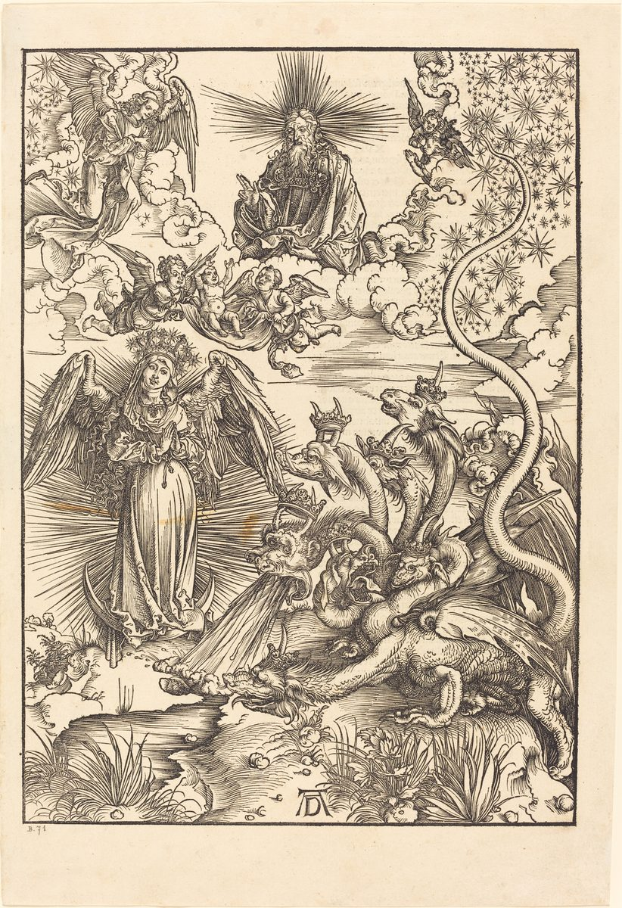

Revelation 12 — The Mister Translation

⚠ Dürer compresses several verses into one crowded tableau — a technique his whole Apocalypse series uses freely, rather than splitting the chapter into separate scenes. The woman already wears the wings this book gives her only at verse 14; what may be the flood of verse 15 already pours from the dragon's mouth toward the ground; and no child is shown being born or caught up, though the moment is clearly meant to evoke it. The seven heads each carry a small crown of their own — Dürer's reading of the seven diadems of verse 3 — and the trail of stars streaming from the upper right toward the dragon's tail renders the swept-away third of heaven's stars (verse 4) as a single continuous line, rather than as stars actually falling to earth.
{kind=link}
Translator’s Notes
⚠ Who is she? This project reports rather than settles the oldest argument this chapter provokes. Catholic tradition has long read the woman as MARY, crowned and clothed in glory; the Reformers and most Protestant commentary since have read her corporately — Israel first (the sun, moon, and twelve stars is Joseph’s own boyhood dream turned constellation, Genesis 37:9–10, where the sun is Jacob, the moon Rachel, and the eleven bowing stars his brothers — here rounded to twelve, the tribes complete), then by extension the believing community that gives birth to the Messiah and later suffers what he suffered. A few readers hold both are true at once, one figure standing for both the mother and the people she belongs to. The text itself never resolves it; it calls her only a sēmeion, a SIGN — the same word the dragon gets three verses later, the first of several matched pairs this chapter sets in deliberate opposition.
Labor, twice over. Ōdinousa is the ordinary word for the pain of childbirth, and Revelation is not inventing a metaphor when it makes the coming of the Messiah cost a woman real agony — the same verb the Hebrew prophets already use for the anguish of a nation waiting on God (Isaiah 26:17–18; Micah 4:9–10, a birth-pang that ends, there too, in rescue).
A borrowed shape. Seven heads, ten horns, a body counted piece by piece — this is the exact anatomy Daniel gave the fourth beast rising from the sea (Daniel 7:7, 24), lent here to the power behind every earthly empire rather than to any one of them. Chapters 13 and 17 will hand this same body, almost unchanged, to two more beasts in turn: the dragon’s shape becomes their shape, the source lending its likeness to what it empowers.
“Shepherd all the nations with an iron rod.” The identical promise, almost word for word, already belonged to the overcomer in Thyatira’s letter (2:27) and will belong to the rider on the white horse three chapters from now (19:15) — all three quote Psalm 2:9, and all three keep the Septuagint’s reading “shepherd” (poimanei) rather than the Hebrew’s “break” (tero’em), the wordplay 2:27’s own note explains in full. Here the son born of the woman IS that ruler, snatched to God’s throne the instant he is born — birth, rule, and rescue compressed into a single verse, with the whole earthly life of Jesus — his ministry, his death — passed over in silence between one clause and the next.
1,260 days. The same figure this book has already used once, in days (11:3, the two witnesses’ prophesying) and will use twice more, as “forty-two months” (11:2) and as “a time, and times, and half a time” (v14, below) — three ways of writing the same three-and-a-half years, the broken half of Daniel’s seven (Daniel 7:25; 12:7). One clock, kept in three different units, ticking through both this chapter and the one before it.
Michael. Named as ARCHANGEL only once in the whole Bible (Jude 9, disputing with the Devil over the body of Moses), and as Israel’s own guardian prince in Daniel’s last vision — “Michael shall stand up, the great prince who stands over the sons of your people” (Daniel 12:1), the very chapter that supplied this book’s own “time, times, and half a time.” Both older texts stand him against distress and against the accuser; here he leads the counter-attack outright. A small minority of readers, mostly within the last two centuries, have identified Michael with Christ himself (leaning on 1 Thessalonians 4:16’s “voice of an archangel”); the great majority, ancient and modern, keep him a created being, chief of the angels — the reading this translation follows, without erasing that the question has real defenders on both sides.
Four names for one enemy. This verse does something the rest of Scripture never quite does in one place: the great dragon, the ancient serpent, Devil, and Satan are stacked as apposition — four titles collapsed onto a single referent, so that no reader can mistake one for a separate power. “The ancient serpent” reaches all the way back to Eden: this is the first place in the whole Bible where the serpent of Genesis 3 is named outright as the Devil and Satan — the identification later ages simply assumed, made explicit here for the first time, on the very chapter that also puts the serpent’s head under a heel (Genesis 3:15, “he will crush your head”), which this chapter’s own defeat replays on a cosmic scale. “Satan” is examined at length in this project’s Job 1 note; “Devil,” Greek diabolos — “slanderer” — is the Septuagint’s own translation of the Hebrew title, and the direct ancestor of the English word.
Katēgōr. Not the ordinary Greek word for accuser (katēgoros, which most later manuscripts smooth this to) but a rarer, more Semitic-flavored form found almost nowhere else in surviving Greek — a foreign-sounding word for a title John elsewhere leaves untranslated as SATAN, which itself means “accuser.” English still keeps the ordinary root in CATEGORY (a thing accused, or charged, of belonging somewhere). The scene it describes — a prosecutor standing in a heavenly court, accusing a man before God “day and night” — is not new to this chapter: Job 1:6 already staged it once (“the sons of God came to present themselves before Jehovah, and the Accuser also came among them”), and Zechariah 3:1 staged it a second time, on the high priest Joshua — Zechariah’s own note in this project already flagged that verse as the same figure and the same courtroom scene Job’s note had named “seven chapters in advance.” This is the third staging, and the last: the court itself is dissolved, the prosecutor removed from the bench for good.
Testimony, again. The brothers overcome him “by the blood of the Lamb and by the word of their testimony” — the same martyria this book opened with (1:2 and 1:9, “the testimony of Jesus”) and that cost the two witnesses their lives one chapter ago (11:7). Verse 17, at the close of this same chapter, hands the dragon a new target: those who “hold to the testimony of Jesus” — the same phrase, one more time, now aimed at everyone left standing.
Eagle’s wings. A deliberate echo of the desert itself: “you have seen… how I bore you on eagles’ wings and brought you to myself” (Exodus 19:4), spoken at Sinai to a people who had just been carried out of Egypt into a wilderness of their own. The woman’s rescue is Israel’s exodus run again, on the same terrain and by the same means.
The earth helps — and the flood loses. A river poured from a serpent’s mouth, and the ground itself opening to drink it, is the closest this book comes to open comedy: the dragon’s weapon simply disappears into the dirt. No other agent is named; the earth acts on its own, as if creation itself will not cooperate with this particular war.
“The rest of her offspring.” Failing against the woman herself, the dragon turns on everyone else who can be called her child — defined here by two marks, keeping the commandments of God and holding the testimony of Jesus, the same double description this book will use again for its final martyrs (14:12). The chapter that opened with one woman in labor closes with an entire scattered family under attack.
⚠ One letter, one speaker, one chapter division. The earliest and best manuscripts (behind WH, Treg, and NA28) read estathē, “HE stood” — the dragon, still the subject of every verb since verse 13, taking up a position on the shoreline to watch for what comes next. The later Byzantine tradition (RP, the base behind the King James) reads estathēn instead — “I stood” — which makes the clause John’s own, and belongs, in every English Bible that follows it, not to the end of this chapter but to the OPENING of the next: “And I stood upon the sand of the sea, and saw a beast rise up out of the sea” (KJV 13:1). One consonant moves an entire verse across a chapter boundary. This translation follows the earlier reading and keeps the dragon on the beach where this chapter leaves him — watching, and waiting for the two beasts chapter 13 is about to raise out of the sea and the earth.
Patterns worth carrying forward
What this chapter answers. Nine chapters of trumpets and woes have shown WHAT is happening on earth; chapter 12 is the first place this book steps behind the curtain to show WHY — a defeated dragon, furious and short on time, is the real engine behind everything chapters 6–11 have already staged and everything chapters 13–19 are about to. The war in heaven is already won before a single beast rises from the sea; what remains on earth is the loser’s tantrum, not a contest with an uncertain outcome.
Where this translation sides with the literal shelf: “shepherd all the nations with an iron rod” (matching 2:27 and 19:15, against the shelf’s “rule”), “the accuser” for the rare katēgōr rather than smoothing it to the ordinary word, and keeping all four titles of verse 9 stacked in a single sentence rather than breaking it into shorter clauses.
Where it goes its own way: the woman’s identity is reported, not resolved (see the note at verse 1); verse 18 follows the earlier manuscripts and keeps “he stood” as this chapter’s own closing image, against the King James tradition that carries it into chapter 13 as “I stood.”
Next in this book: Revelation 13, not yet on these pages, where the dragon standing on the sand hands his throne and his authority to a beast rising out of the very water he is watching.